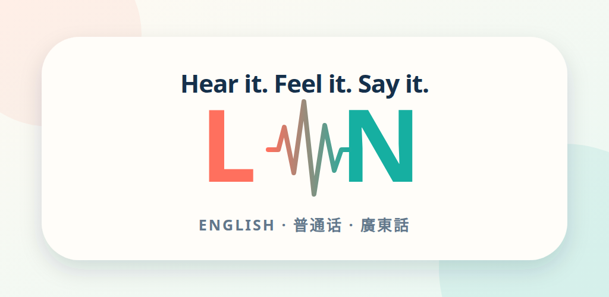

Listening
Two short model prompts, readable phonetic cues, and a plain-language explanation of what changes.
For tutors and small language schools
Bring the pair your learners keep mixing up. I’ll shape it into a compact bilingual web lesson with clear listening, visual and speaking steps.
One complete teaching piece
One pronunciation contrast, one learner group, English plus Simplified Chinese or Traditional Chinese.
Two short model prompts, readable phonetic cues, and a plain-language explanation of what changes.
Original teaching visuals that make the relevant contact, airflow or sound pattern easier to notice.
A responsive, printable four-step lesson with a small sequence from isolation to useful phrases.
A 15–30 second captioned walkthrough, the deployable lesson files, and one consolidated correction pass.
The sample is the proof
The finished L & N lesson combines model audio, two airflow diagrams, meaning anchors in Mandarin and Cantonese, four practice steps, print styles, and a captioned walkthrough. You can inspect the page and its source before writing.
Explore the finished lesson →
Project-owned sample · no signupStart with the teaching problem
Send the two sounds or words, your learners’ first language, their level, and where you plan to use the lesson. A link to material you own or may reuse is helpful; learner recordings are not needed.
I’ll reply with a fit or no-fit answer before payment. If it fits, we agree the exact words, language, delivery date, source rights, and correction boundary in writing.
Email the fit checkechomind@lazying.art
Delivery is within ten business days after payment and complete agreed inputs. Cancel before work begins for a full refund; after work begins, unstarted stages are refunded. The pack does not include clinical assessment, certified translation, voice cloning, learner-data collection, app integration, hosting, a custom domain, or ongoing support.